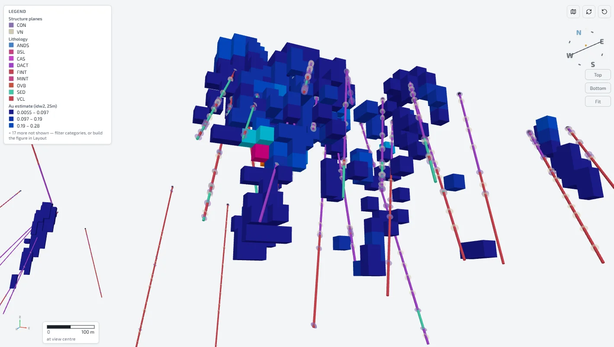
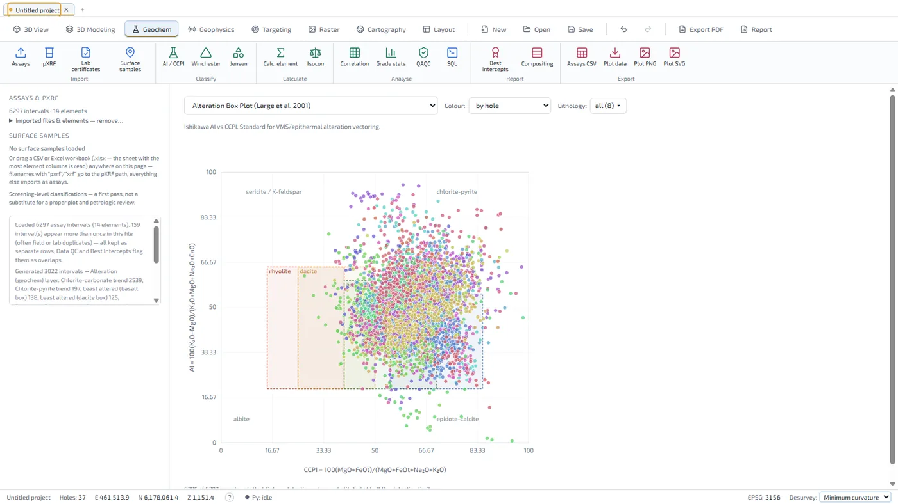
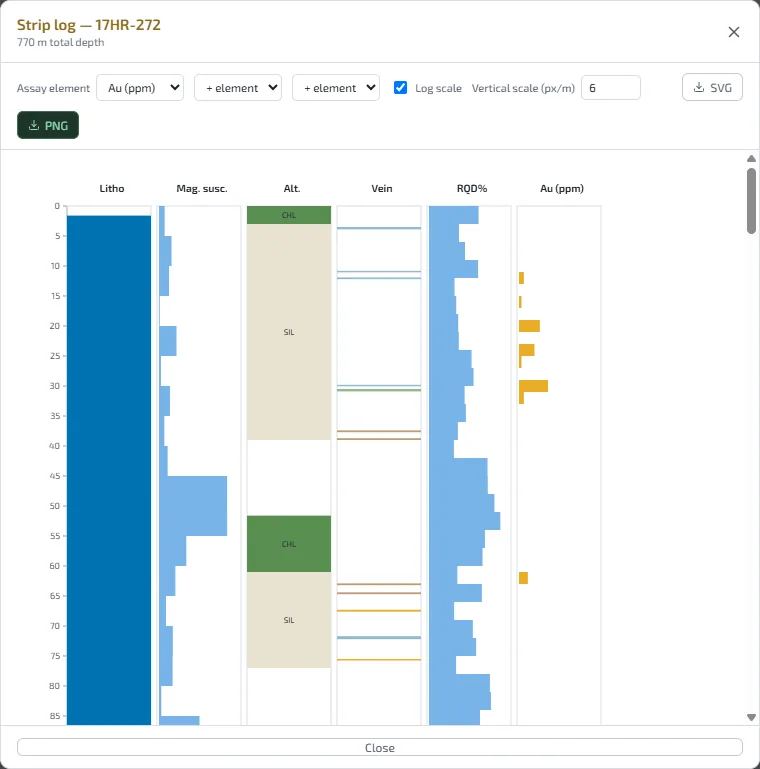

3D software for mineral exploration, free for everyone
Drillholes, geochemistry, geophysics, modelling and drill planning in one place — on an ordinary laptop, offline, with no account and no licence to buy.
Download for Windows View the source
Why GeoStrix
GeoStrix is made to support mineral exploration everywhere, especially where resources are scarce.
Built for exploration
Made for exploration geologists: drillholes, geochemistry and geophysics come together to answer one question — where to drill next.
Easy to use
Drop in your files and GeoStrix recognises them, checks the data, and explains what it did in plain language.
Light enough for a cheap computer
Runs on an ordinary laptop with no special hardware and no internet connection.
What it does
Import CSV and Excel files, shapefiles, GeoPackages, GeoTIFFs and DXF, or connect straight to a PostgreSQL or MySQL database.
Drillholes in 3D
Collars, surveys and every kind of log; desurveyed traces with terrain, cross-sections, level plans, fence diagrams, strip logs and data checks.
Geochemistry
Classification and alteration diagrams, statistics, compositing, best intercepts, and QA/QC of standards, blanks and duplicates.
Geophysics
Point surveys, grids and voxel models, plus magnetic, gravity and 2D DC resistivity / IP inversion.
Modelling and targeting
Implicit geological surfaces and faults, grade shells, block models, structural analysis and drill planning to a target.
Maps and reports
Any coordinate system worldwide, map and web layers, claims, and print-ready layouts exported to PDF.
Your data stays yours
No account, no telemetry, no cloud. Projects are files on your computer. Privacy
A look inside
Shown with the bundled sample project: 37 real drillholes from British Columbia's public ARIS database (report 37584).


An exploration tool, not resource-estimation software
GeoStrix's grade tools use nearest-neighbour, inverse-distance or moving-least-squares interpolation, with no kriging, classification, dilution or recovery. Nothing it produces is a Mineral Resource under NI 43-101, JORC or any comparable code; public disclosure of tonnage or grade needs an estimate by a Qualified Person.
Download
GeoStrix is free and open source under the MIT licence. The installer includes everything, including the Python engine used for implicit modelling and inversions. It updates itself when a new version is out.
Download for WindowsWindows 10 / 11 (64-bit)
Every release, its checksums and the full source are on GitHub.
Code signing policy · Privacy policy · To uninstall: Windows Settings → Apps → Installed apps → GeoStrix → Uninstall (your project files are kept).
If Windows warns you
GeoStrix is not code-signed yet, so Windows SmartScreen or your antivirus may hold a brand-new installer the first time:
- On “Windows protected your PC”, click More info, then Run anyway.
- If nothing happens at all, your antivirus may have quarantined it: restore the file from its quarantine, or right-click it → Properties → tick Unblock.
- Updates installed from inside GeoStrix are not affected.
Support
Found a bug, or have an idea? Email support@geostrix.com, or open an issue on GitHub. In GeoStrix, Help → Report a Problem puts your description, a picture of the window and the technical details into a zip file and opens the email for you — you attach the file and send it.
Open source
The code is on GitHub under the MIT licence: use it, study it, change it. Contributions are welcome — start with an issue.